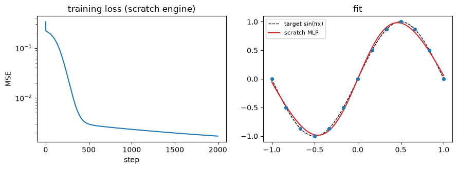

Primer — backpropagation, from the chain rule to torch.autograd
The chain rule by hand, a scalar autograd engine built from scratch, the matrix view (\(\partial\mathcal L/\partial W=\boldsymbol\delta\hat{\mathbf x}^\top\)), PyTorch’s autograd, and higher-order/meta-gradients — each with a runnable demo. Optional: read it when a foundations module points here.
Runs on CPU in seconds. — or clone the repo and uv sync in courses/continual-learning/.
Why build it from scratch here? M6 makes a claim that only lands if backprop is concrete to you: one gradient step on a layer is an associative-memory write — for \(\mathbf y=W\hat{\mathbf x}\),
an outer product with key = input \(\hat{\mathbf x}\) and value = \(-\boldsymbol\delta\) (negative surprise). You cannot feel that reframing while backprop is a black box. So we open the box.
1. The chain rule, concretely
Backprop is the chain rule applied to a composed function, bookkept efficiently.
Who it came from — three names, honestly. The algorithm is reverse-mode automatic differentiation, published by Seppo Linnainmaa in his 1970 master’s thesis for arbitrary sparse computational graphs, with no mention of neural networks at all. Paul Werbos’s 1974 PhD thesis was the first to propose using it to train them. What made it stick was Rumelhart, Hinton & Williams’s 1986 Nature paper “Learning representations by back-propagating errors” (323:533–536), which showed that the hidden layers learn useful internal representations — so backprop is popularly dated to 1986, though the algorithm it names is Linnainmaa’s from 1970. Both the engine you build in §3 and torch.autograd in §6 are that same method with better bookkeeping.
Take a scalar composition
\[L(x)=\sin(a),\quad a=b^2,\quad b=3x+1.\]
By the chain rule the derivative is a product of local derivatives, read right-to-left (output back to input):
That is the whole idea of backprop: each node knows only its local derivative w.r.t. its inputs; you multiply it by the upstream gradient flowing in from the output side, and pass the result further back. Below we compute \(dL/dx\) by that hand formula and check it against a finite-difference estimate \(\big(L(x+h)-L(x-h)\big)/2h\).
import numpy as npdef f(x): b =3*x +1 a = b**2return np.sin(a)x0 =0.7# hand derivative via chain rule: cos(a) * 2b * 3b =3*x0 +1a = b**2manual = np.cos(a) * (2*b) *3# central finite differenceh =1e-6numeric = (f(x0 + h) - f(x0 - h)) / (2*h)print(f"manual dL/dx = {manual:.10f}")print(f"numeric dL/dx = {numeric:.10f}")print(f"max abs diff = {abs(manual - numeric):.2e}")print("→ chain rule = product of LOCAL derivatives, propagated backward; matches finite diff.")
manual dL/dx = -18.2818541248
numeric dL/dx = -18.2818541252
max abs diff = 4.25e-10
→ chain rule = product of LOCAL derivatives, propagated backward; matches finite diff.
2. A single neuron
Now a learnable unit: forward is \(z=w\,x+b\), then a \(\tanh\) activation \(\hat y=\tanh(z)\), scored by squared error \(L=\tfrac12(\hat y-t)^2\). The gradients w.r.t. the parameters come straight from the chain rule:
Note the shape already: \(\partial L/\partial w = \delta\cdot x\) is surprise × input — the scalar seed of the outer product \(\boldsymbol\delta\hat{\mathbf x}^\top\) we’ll hit in §5. We verify both partials against finite differences.
∂L/∂w : manual=+0.37709159 numeric=+0.37709159 diff=1.13e-11
∂L/∂b : manual=+0.25139440 numeric=+0.25139440 diff=2.60e-11
→ ∂L/∂w = δ·x is 'surprise × input' — the scalar seed of the outer product δx̂ᵀ.
3. A scalar autograd engine (micrograd-style)
Doing the chain rule by hand does not scale. The fix (Karpathy’s micrograd) is to make each scalar a node that records how it was computed and knows its own local derivative. Then a single .backward() walks the graph once and fills in every gradient.
Each Value holds:
.data — the forward value;
.grad — \(\partial L/\partial\text{this}\), accumulated during backward (starts at 0);
_backward — a closure that pushes this node’s gradient into its inputs’ .grad using the local derivative;
_prev — the child nodes it was built from (the edges of the DAG).
.backward() does a topological sort of the DAG (so every node is processed only after everything downstream of it), seeds the output’s grad to 1, then calls each _backward in reverse order. The one detail that makes it correct: gradients accumulate with +=, so a value used in several places (e.g. a*a) sums the contributions from every path — get this wrong and repeated-use expressions silently break. We test exactly that case next.
import mathclass Value:def__init__(self, data, _children=(), _op=''):self.data =float(data)self.grad =0.0self._backward =lambda: None# default: leaf, nothing upstream to pushself._prev =set(_children)self._op = _opdef__add__(self, other): other = other ifisinstance(other, Value) else Value(other) out = Value(self.data + other.data, (self, other), '+')def _backward():self.grad += out.grad # d(a+b)/da = 1 other.grad += out.grad out._backward = _backwardreturn outdef__mul__(self, other): other = other ifisinstance(other, Value) else Value(other) out = Value(self.data * other.data, (self, other), '*')def _backward():self.grad += other.data * out.grad # d(a*b)/da = b other.grad +=self.data * out.grad out._backward = _backwardreturn outdef__pow__(self, k): # only scalar constant powersassertisinstance(k, (int, float)) out = Value(self.data ** k, (self,), f'**{k}')def _backward():self.grad += (k *self.data ** (k -1)) * out.grad out._backward = _backwardreturn outdef tanh(self): t = math.tanh(self.data) out = Value(t, (self,), 'tanh')def _backward():self.grad += (1- t*t) * out.grad # d tanh/dz = 1 - tanh^2 out._backward = _backwardreturn outdef relu(self): out = Value(max(0.0, self.data), (self,), 'relu')def _backward():self.grad += (out.data >0) * out.grad out._backward = _backwardreturn outdef exp(self): e = math.exp(self.data) out = Value(e, (self,), 'exp')def _backward():self.grad += e * out.grad out._backward = _backwardreturn out# convenience / reverse opsdef__neg__(self): returnself*-1def__sub__(self, o): returnself+ (-o ifisinstance(o, Value) else Value(-o))def__radd__(self, o): returnself+ odef__rmul__(self, o): returnself* odef__truediv__(self, o): returnself* (o **-1ifisinstance(o, Value) else Value(o) **-1)def__repr__(self): returnf"Value(data={self.data:.4f}, grad={self.grad:.4f})"def backward(self):# 1) topological order of the DAG topo, visited = [], set()def build(v):if v notin visited: visited.add(v)for child in v._prev: build(child) topo.append(v) build(self)# 2) seed output grad, 3) apply _backward in reverse topological orderfor v in topo: v.grad =0.0self.grad =1.0for v inreversed(topo): v._backward()print("Value engine defined.")
Value engine defined.
The classic bug test: multi-use nodes. Build \(L = a\cdot a + a\) at \(a=3\). Analytically \(L=a^2+a\), so \(dL/da = 2a+1 = 7\). The value a feeds three edges (both factors of a*a, plus the lone +a); only += accumulation gets this right. We verify the engine against torch.autograd on the identical expression.
import torch# --- scratch engine ---a = Value(3.0)L = a*a + aL.backward()scratch_grad = a.grad# --- torch on the identical expression ---at = torch.tensor(3.0, requires_grad=True)Lt = at*at + atLt.backward()torch_grad = at.grad.item()print(f"L(a=3) = {L.data} (torch: {Lt.item()})")print(f"dL/da scratch = {scratch_grad}")print(f"dL/da torch = {torch_grad}")print(f"dL/da analytic = {2*3+1}")print(f"max abs diff (scratch vs torch) = {abs(scratch_grad - torch_grad):.2e}")print("→ multi-use node handled: grads accumulate over every path (the += is load-bearing).")
L(a=3) = 12.0 (torch: 12.0)
dL/da scratch = 7.0
dL/da torch = 7.0
dL/da analytic = 7
max abs diff (scratch vs torch) = 0.00e+00
→ multi-use node handled: grads accumulate over every path (the += is load-bearing).
Now a bigger, mixed expression touching every op (+ * ** tanh relu exp and division), with several reused leaves. We check every leaf’s gradient against torch and print the max absolute difference across all of them.
import torchdef build_expr(engine, a, b, c):# a messy expression reusing a, b, c multiple times, exercising every op z = (a*b + b.exp()) * (a + c) z = z.tanh() + (a*a*c).relu() z = z + (b / (c +2.0)) **2return z# scratcha, b, c = Value(0.5), Value(-1.2), Value(0.9)z = build_expr(Value, a, b, c)z.backward()scratch = {'a': a.grad, 'b': b.grad, 'c': c.grad}# torchat = torch.tensor(0.5, requires_grad=True)bt = torch.tensor(-1.2, requires_grad=True)ct = torch.tensor(0.9, requires_grad=True)zt = build_expr(torch, at, bt, ct)zt.backward()torch_g = {'a': at.grad.item(), 'b': bt.grad.item(), 'c': ct.grad.item()}print(f"forward value scratch={z.data:.8f} torch={zt.item():.8f}")maxdiff =max(abs(scratch[k] - torch_g[k]) for k in scratch)for k in scratch:print(f" ∂z/∂{k}: scratch={scratch[k]:+.8f} torch={torch_g[k]:+.8f} diff={abs(scratch[k]-torch_g[k]):.2e}")print(f"max abs grad diff (scratch vs torch, all leaves) = {maxdiff:.2e}")print("→ the from-scratch engine reproduces torch.autograd to ~machine precision.")
forward value scratch=0.00070372 torch=0.00070366
∂z/∂a: scratch=-0.76924760 torch=-0.76924765 diff=5.33e-08
∂z/∂b: scratch=+0.66082650 torch=+0.66082644 diff=5.36e-08
∂z/∂c: scratch=-0.12014757 torch=-0.12014760 diff=3.35e-08
max abs grad diff (scratch vs torch, all leaves) = 5.36e-08
→ the from-scratch engine reproduces torch.autograd to ~machine precision.
4. Train a tiny net with the scratch engine
If the engine is real, it should learn. We build a minimal MLP entirely out of Values — one hidden layer of tanh units, a linear output — and fit a 1-D nonlinear target \(g(x)=\sin(\pi x)\) on a handful of points. The training loop is hand-rolled SGD: forward → backward() → nudge every parameter by \(-\eta\,\text{param.grad}\) → zero the grads. If loss falls toward zero, the scratch autograd is genuinely driving learning.
import math, randomrandom.seed(0)class Neuron:def__init__(self, nin):self.w = [Value(random.uniform(-1, 1)) for _ inrange(nin)]self.b = Value(0.0)def__call__(self, x): act =sum((wi*xi for wi, xi inzip(self.w, x)), self.b)return actdef params(self): returnself.w + [self.b]class Layer:def__init__(self, nin, nout, act):self.neurons = [Neuron(nin) for _ inrange(nout)]self.act = actdef__call__(self, x): outs = [n(x) for n inself.neurons]ifself.act =='tanh': outs = [o.tanh() for o in outs]return outsdef params(self): return [p for n inself.neurons for p in n.params()]class MLP:def__init__(self):self.l1 = Layer(1, 16, 'tanh')self.l2 = Layer(16, 1, 'linear')def__call__(self, x): h =self.l1(x)returnself.l2(h)[0]def params(self): returnself.l1.params() +self.l2.params()# toy 1-D regression: fit sin(pi x)xs = [i/6-1for i inrange(13)] # 13 points in [-1, 1]ys = [math.sin(math.pi*x) for x in xs]net = MLP()lr =0.1losses = []for step inrange(2000): loss = Value(0.0)for x, y inzip(xs, ys): pred = net([Value(x)]) loss = loss + (pred - y)**2 loss = loss * (1.0/len(xs)) # mean squared error loss.backward()for p in net.params(): p.data -= lr * p.grad # SGD step losses.append(loss.data)print(f"initial MSE = {losses[0]:.4f}")print(f"final MSE = {losses[-1]:.6f} (after 2000 steps)")print(f"→ the from-scratch engine learns: MSE {losses[0]:.3f} → {losses[-1]:.4f}.")
initial MSE = 0.3347
final MSE = 0.001701 (after 2000 steps)
→ the from-scratch engine learns: MSE 0.335 → 0.0017.
import matplotlib.pyplot as pltimport numpy as npfig, ax = plt.subplots(1, 2, figsize=(9, 3.4))ax[0].plot(losses); ax[0].set_yscale('log')ax[0].set_title("training loss (scratch engine)"); ax[0].set_xlabel("step"); ax[0].set_ylabel("MSE")grid = [i/50-1for i inrange(101)]pred = [net([Value(x)]).data for x in grid]ax[1].plot(grid, [np.sin(np.pi*x) for x in grid], 'k--', lw=1, label="target sin(πx)")ax[1].plot(grid, pred, 'C3', lw=1.5, label="scratch MLP")ax[1].scatter(xs, ys, s=18, color='C0', zorder=3)ax[1].set_title("fit"); ax[1].legend(fontsize=8)plt.tight_layout(); plt.show()

5. From scalars to tensors — the matrix view
The scratch engine is correct but slow: one node per scalar. A layer with a \(1000\times1000\) weight is a million nodes, before you even count activations. Real autograd groups scalars into tensors and computes gradients at the tensor level with the vector–Jacobian product (VJP): given the upstream gradient \(\boldsymbol\delta=\partial\mathcal L/\partial\mathbf y\), each op returns \(\partial\mathcal L/\partial(\text{its inputs})\) directly, never materializing the full Jacobian.
For the linear layer \(\mathbf y = W\hat{\mathbf x}\) the VJP w.r.t. \(W\) is an outer product:
because \(\partial\mathcal L/\partial W_{ij}=\delta_i\,\hat x_j\) — “how wrong output \(i\) was” × “input \(j\).” This is the exact identity M6 builds on: a gradient step writes the outer product \(\boldsymbol\delta\hat{\mathbf x}^\top\) into the weights — key = input \(\hat{\mathbf x}\), value = \(-\boldsymbol\delta\) (negative surprise) — i.e. one backprop step is an associative-memory write (M1 — Associative memory’s Hebbian \(\mathcal M \mathrel{+}= \mathbf v\mathbf k^\top\), seen from the optimizer’s side). We verify \(\partial\mathcal L/\partial W=\boldsymbol\delta\hat{\mathbf x}^\top\) against torch.
import torchtorch.manual_seed(0)W = torch.randn(3, 5, requires_grad=True)x = torch.randn(5)target = torch.randn(3)y = W @ xloss =0.5* ((y - target)**2).sum()loss.backward()delta = (y - target).detach() # δ = ∂L/∂youter = torch.outer(delta, x) # δ x̂ᵀprint("∂L/∂W == δ x̂ᵀ ? :", torch.allclose(W.grad, outer, atol=1e-6))print(f"max abs diff : {(W.grad - outer).abs().max().item():.2e}")print("key = x̂ (layer input), value = -δ (negative surprise)")print("→ one backprop step writes the outer product δx̂ᵀ into W — an associative-memory write (M7).")
∂L/∂W == δ x̂ᵀ ? : True
max abs diff : 0.00e+00
key = x̂ (layer input), value = -δ (negative surprise)
→ one backprop step writes the outer product δx̂ᵀ into W — an associative-memory write (M7).
6. PyTorch autograd
PyTorch builds the same DAG we hand-rolled — but dynamically, as the forward runs (define-by-run), grouped into tensors. The moving parts:
requires_grad=True marks a tensor as something to differentiate w.r.t.; ops on it record a graph.
leaf vs non-leaf.Leaves are tensors you created directly with requires_grad=True (parameters, inputs). Non-leaves are results of ops. After .backward(), only leaves keep a populated .grad; intermediate .grad is freed to save memory — call .retain_grad() on a non-leaf to keep it.
.backward() seeds the scalar output’s grad to 1 and runs the VJPs backward, accumulating into every leaf’s .grad.
Below we redo §5’s linear layer, confirm the leaf gradient equals the hand-derived \(\boldsymbol\delta\hat{\mathbf x}^\top\), and inspect a non-leaf gradient via retain_grad().
import torchtorch.manual_seed(0)W = torch.randn(3, 5, requires_grad=True) # leafx = torch.randn(5)target = torch.randn(3)y = W @ x # non-leafy.retain_grad() # ask torch to KEEP y.grad (it's freed by default)loss =0.5* ((y - target)**2).sum()loss.backward()print("W is leaf :", W.is_leaf, " -> W.grad populated:", W.grad isnotNone)print("y is leaf :", y.is_leaf, " -> y.grad populated:", y.grad isnotNone, "(only because of retain_grad)")print()delta = (y - target).detach()print("y.grad ( = δ = ∂L/∂y ) matches (y - target)?", torch.allclose(y.grad, delta, atol=1e-6))print("W.grad == δ x̂ᵀ (hand-derived)? ", torch.allclose(W.grad, torch.outer(delta, x), atol=1e-6))print("→ torch reproduces the §5 identity; non-leaf grads need retain_grad() to be visible.")
W is leaf : True -> W.grad populated: True
y is leaf : False -> y.grad populated: True (only because of retain_grad)
y.grad ( = δ = ∂L/∂y ) matches (y - target)? True
W.grad == δ x̂ᵀ (hand-derived)? True
→ torch reproduces the §5 identity; non-leaf grads need retain_grad() to be visible.
7. Torch grad tips & common practice
The rest is the practical vocabulary you’ll use throughout the course. Each item below has a runnable micro-demo that prints the effect.
7.1 Gradients ACCUMULATE — why zero_grad()..backward()adds into .grad rather than overwriting it (this is what let §3’s a*a sum over paths). If you call .backward() twice without clearing, gradients double; training loops must call optimizer.zero_grad() (or p.grad = None) each step.
7.2 no_grad / inference_mode — don’t build a graph. At eval time you don’t need gradients; tracking them wastes memory and time. torch.no_grad() stops the graph from being recorded; torch.inference_mode() is a stronger, faster version. Under either, results have requires_grad=False.
import torchtorch.manual_seed(0)w = torch.tensor([1.0, 2.0], requires_grad=True)def loss(): return (w**2).sum() # dL/dw = 2w = [2, 4]loss().backward()print("after 1st backward :", w.grad.tolist(), " (= 2w, correct)")loss().backward()print("after 2nd backward :", w.grad.tolist(), " (DOUBLED — grads accumulated)")w.grad =None# what zero_grad() does under the hoodloss().backward()print("after zeroing + backward:", w.grad.tolist(), " (back to correct)")print("→ grads add up; clear them every step or old gradients contaminate the new ones.")
after 1st backward : [2.0, 4.0] (= 2w, correct)
after 2nd backward : [4.0, 8.0] (DOUBLED — grads accumulated)
after zeroing + backward: [2.0, 4.0] (back to correct)
→ grads add up; clear them every step or old gradients contaminate the new ones.
normal : requires_grad = True grad_fn set: True
under no_grad : requires_grad = False
under inference : requires_grad = False
→ wrap eval/inference in no_grad / inference_mode: no graph, less memory, faster.
7.3 .detach() — stop-gradient..detach() returns a tensor that shares data but is cut out of the graph: gradients do not flow back through it. Used constantly — targets that shouldn’t be trained through, the “surprise” \(\boldsymbol\delta\) treated as a constant when forming a write, or freezing part of a network.
7.4 retain_graph / create_graph — double-backward. By default the graph is freed after .backward(). retain_graph=True keeps it (so you can back-prop the same graph twice); create_graph=True goes further — it makes the backward pass itself differentiable, so you can take gradients of gradients. That is the whole subject of §8 below (higher-order / meta-gradients), so we don’t demo create_graph here — see §8 for the Hessian, the HVP, and the MAML meta-gradient. Here we just show the simpler detach / retain_graph behaviour.
import torchx = torch.tensor(3.0, requires_grad=True)y = x * x # dy/dx = 2x = 6z = x * x.detach() # detached factor is a CONSTANT (=3): dz/dx = 3y.backward(retain_graph=True)print("d(x*x)/dx =", x.grad.item(), " (= 2x, gradient flows through both)")x.grad =Nonez.backward()print("d(x*detach(x))/dx =", x.grad.item(), " (= x, second factor frozen at 3)")print("→ detach() cuts the graph: the detached operand acts as a constant (stop-gradient).")
d(x*x)/dx = 6.0 (= 2x, gradient flows through both)
d(x*detach(x))/dx = 3.0 (= x, second factor frozen at 3)
→ detach() cuts the graph: the detached operand acts as a constant (stop-gradient).
7.5 Gradient accumulation over micro-batches. Summing gradients across several small forward/backward passes before one optimizer step is equivalent to one big batch — the trick for a large effective batch in limited memory. Because grads accumulate (7.1), you just don’t zero between micro-batches: accumulating over 4 micro-batches gives the same gradient as one full-batch pass.
7.6 Gradient clipping. Rescaling the gradient when its norm exceeds a threshold keeps a single huge gradient from blowing up a step — standard for RNNs / long-context training. The norm-clipping rule is Pascanu, Mikolov & Bengio (2013), proposed together with the analysis of why recurrent nets explode in the first place. clip_grad_norm_ scales the whole gradient vector in place so its norm equals the cap.
import torchtorch.manual_seed(0)X = torch.randn(4, 3) # 4 samplesw = torch.zeros(3, requires_grad=True)target = torch.randn(4)# one full-batch stepw.grad =None((X @ w - target)**2).mean().backward()full = w.grad.clone()# accumulate over 4 micro-batches (scale each by 1/4 to match the mean)w.grad =Nonefor i inrange(4): ((X[i] @ w - target[i])**2* (1/4)).backward()accum = w.grad.clone()print("full-batch grad :", [round(v,4) for v in full.tolist()])print("accumulated grad:", [round(v,4) for v in accum.tolist()])print("max abs diff :", f"{(full-accum).abs().max().item():.2e}")print("→ accumulating micro-batch grads (no zero between) == one larger batch.")
full-batch grad : [0.588, 0.9566, -0.56]
accumulated grad: [0.588, 0.9566, -0.56]
max abs diff : 5.96e-08
→ accumulating micro-batch grads (no zero between) == one larger batch.
import torchtorch.manual_seed(0)w = torch.randn(10, requires_grad=True)(1000.0* (w**2).sum()).backward() # deliberately large gradientpre = w.grad.norm().item()torch.nn.utils.clip_grad_norm_([w], max_norm=1.0)post = w.grad.norm().item()print(f"grad norm before clip = {pre:.2f}")print(f"grad norm after clip = {post:.4f} (capped at max_norm=1.0)")print("→ clip_grad_norm_ rescales the gradient to the cap; direction preserved, magnitude bounded.")
grad norm before clip = 6988.06
grad norm after clip = 1.0000 (capped at max_norm=1.0)
→ clip_grad_norm_ rescales the gradient to the cap; direction preserved, magnitude bounded.
7.7 torch.autograd.gradcheck — the principled finite-diff check. Everything above we verified by hand-rolled finite differences. gradcheck is the library’s version: it compares analytic gradients to numerical ones. It needs float64 inputs with requires_grad=True (float32 is too coarse for its tight tolerance) and returns True when they agree.
7.8 Common pitfalls (each one printed). The bugs that actually bite in practice:
Forgetting zero_grad — old grads contaminate the step (7.1).
In-place ops on a graph tensor — overwriting a value needed for backward raises a runtime error.
Non-leaf .grad is None without retain_grad() — you read a gradient that was freed (7.5 in §6).
Mixing python floats / .item() into the graph — pulling a scalar out with .item() detaches it; further math on it is not tracked.
import torch# (2) in-place op breaks the graphx = torch.tensor([1.0, 2.0], requires_grad=True)y = x *2try: y +=1# in-place modification of a graph tensor y.sum().backward() msg ="no error (unexpected)"exceptRuntimeErroras e: msg ="RuntimeError: "+str(e).split('.')[0]print("(2) in-place op :", msg)# (3) non-leaf grad is None without retain_gradx = torch.tensor(3.0, requires_grad=True)h = x * x # non-leaf(h *2).backward()print("(3) non-leaf h.grad without retain_grad:", h.grad, "(freed → None)")# (4) .item() drops out of the graphx = torch.tensor(3.0, requires_grad=True)leaked = x.item() *2# python float — NOT trackedtracked = x *2print("(4) via .item() -> python float:", type(leaked).__name__, "| tracked tensor requires_grad:", tracked.requires_grad)print("→ keep math on tensors; .item()/float() silently leave the graph.")
(2) in-place op : no error (unexpected)
(3) non-leaf h.grad without retain_grad: None (freed → None)
(4) via .item() -> python float: float | tracked tensor requires_grad: True
→ keep math on tensors; .item()/float() silently leave the graph.
/var/folders/qb/pm8qgjfj4y9cwq9m5bqx5klw0000gp/T/ipykernel_94548/1694067503.py:18: UserWarning: The .grad attribute of a Tensor that is not a leaf Tensor is being accessed. Its .grad attribute won't be populated during autograd.backward(). If you indeed want the .grad field to be populated for a non-leaf Tensor, use .retain_grad() on the non-leaf Tensor. If you access the non-leaf Tensor by mistake, make sure you access the leaf Tensor instead. See github.com/pytorch/pytorch/pull/30531 for more information. (Triggered internally at /Users/runner/work/pytorch/pytorch/build/aten/src/ATen/core/TensorBody.h:499.)
print("(3) non-leaf h.grad without retain_grad:", h.grad, "(freed → None)")
8. Higher-order gradients
Everything so far took one gradient. But the backward pass is itself an ordinary, differentiable computation — a composition of the same ops — so we can backprop through the backward pass and get the gradient of a gradient. In torch this is exactly what create_graph=True turns on: instead of freeing the backward graph, it keeps it, so the gradient tensor is still a node you can differentiate again.
The Hessian. For a scalar \(f:\mathbb R^n\to\mathbb R\), the gradient \(\nabla f\) is a vector field, and its Jacobian is the Hessian
You get column \(j\) of \(H\) by differentiating the scalar \((\nabla f)_j\) w.r.t. \(\mathbf x\) — i.e. one extra backward pass per component.
The Hessian–vector product (HVP). Usually you never want \(H\) itself (\(n^2\) entries); you want its action on a vector, \(H\mathbf v\). The trick: \(H\mathbf v = \nabla_{\mathbf x}\big(\nabla f\cdot\mathbf v\big)\) — take the gradient, dot it with a constant\(\mathbf v\), and differentiate that scalar once more. One double-backward, cost of ~two gradients, and \(H\) is never materialized. That you can have \(H\mathbf v\) exactly, at about the price of one gradient, is Pearlmutter’s (Fast Exact Multiplication by the Hessian, Neural Computation 6(1):147–160, 1994) — before it, second-order methods paid for the whole matrix.
Why the course cares. Meta-learning and self-modification differentiate through an inner optimization step. In MAML (Finn, Abbeel & Levine 2017) the outer loss is evaluated after an inner gradient step
and updating the meta-parameters needs \(\dfrac{d\mathcal L_{\text{outer}}(\theta')}{d\theta}\). By the chain rule that derivative runs through \(\theta'\), whose own definition already contains a gradient — so the meta-gradient carries a second-order term (\(\nabla^2\mathcal L_{\text{inner}}\), a gradient through a gradient). That is precisely the machinery behind M5 (meta-learning / MAML) and behind Titans/HOPE meta-learning their memory’s initial state and self-modifying update (NL-1 / NL-3). Higher-order grads are not a curiosity here — they are how the Nested-Learning line trains its inner-loop learners.
Toy / analytic check. Take \(f(x,y)=x^2 y + y^3\). By hand:
We compute \(\nabla f\) with create_graph=True, then differentiate each gradient component again to build \(H\) column by column, and compare to the analytic \(\begin{pmatrix}2y&2x\\2x&6y\end{pmatrix}\).
import torchtorch.manual_seed(0)def f(v): x, y = v[0], v[1]return x**2* y + y**3v = torch.tensor([1.3, -0.7], requires_grad=True) # (x, y)# gradient, WITH the graph kept so it stays differentiablegrad, = torch.autograd.grad(f(v), v, create_graph=True) # [2xy, x^2 + 3y^2]# Hessian: differentiate each gradient component w.r.t. v -> a row of HH_rows = []for i inrange(len(grad)): Hi, = torch.autograd.grad(grad[i], v, retain_graph=True) H_rows.append(Hi)H = torch.stack(H_rows)x, y = v.detach()H_analytic = torch.tensor([[2*y, 2*x], [2*x, 6*y]])print("double-backward Hessian:\n", H.detach())print("analytic Hessian:\n", H_analytic)print(f"max abs diff = {(H.detach() - H_analytic).abs().max().item():.2e}")print("→ the Hessian is just the Jacobian of the gradient: one extra backward per component.")
double-backward Hessian:
tensor([[-1.4000, 2.6000],
[ 2.6000, -4.2000]])
analytic Hessian:
tensor([[-1.4000, 2.6000],
[ 2.6000, -4.2000]])
max abs diff = 0.00e+00
→ the Hessian is just the Jacobian of the gradient: one extra backward per component.
HVP without forming \(H\). Now pick a vector \(\mathbf v\) and get \(H\mathbf v\) by double-backward: take \(\nabla f\), dot it with the constant\(\mathbf v\) (detached so no gradient flows into it), and differentiate that scalar once more. We compare to H @ v — forming \(H\)only to check — and confirm they match.
import torchv = torch.tensor([1.3, -0.7], requires_grad=True)vec = torch.tensor([2.0, -1.0]) # the vector we multiply H by (constant)grad, = torch.autograd.grad(f(v), v, create_graph=True)# HVP = d/dv ( grad · vec ), with vec held constant -> H v, no H materializedhvp, = torch.autograd.grad((grad * vec).sum(), v)hvp_reference = H.detach() @ vec # reuse H from the previous cellprint("HVP via double-backward :", hvp.detach().tolist())print("H @ v (reference) :", hvp_reference.tolist())print(f"max abs diff = {(hvp.detach() - hvp_reference).abs().max().item():.2e}")print("→ Hv = ∇(∇f · v): cost of ~two gradients, and H is never materialized.")
HVP via double-backward : [-5.399999618530273, 9.399999618530273]
H @ v (reference) : [-5.399999618530273, 9.399999618530273]
max abs diff = 0.00e+00
→ Hv = ∇(∇f · v): cost of ~two gradients, and H is never materialized.
Torch’s built-in higher-order helpers.torch.autograd.functional.hessian and torch.autograd.functional.hvp do the double-backward for you. We confirm they match our hand-rolled Hessian and HVP.
The payoff: a MAML-style meta-gradient. This is where higher-order grads earn their keep. One tiny meta-parameter \(\theta\), a quadratic inner loss \(\mathcal L_{\text{inner}}(\theta)=\tfrac12(\theta-a)^2\), and an outer loss \(\mathcal L_{\text{outer}}(\theta')=\tfrac12(\theta'-b)^2\) evaluated after one inner GD step
If the inner step is done with create_graph=True, the meta-gradient \(d\mathcal L_{\text{outer}}/d\theta\) flows through \(\theta'\)and through the inner gradient inside it — the second-order signal, which depends on \(\alpha\). If instead the inner step is detached (no_grad), \(\theta'\) is treated as a constant of \(\theta\) up to the identity and you get the first-order approximation (FOMAML) — which the MAML paper itself evaluates (§5.2) and finds nearly as accurate, on the grounds that ReLU nets are locally almost linear, so the second derivatives are close to zero anyway. Here everything is closed-form, so we can also check by hand:
The two differ by exactly the factor \((1-\alpha)\) — that gap is the higher-order term. We print both and their difference.
import torcha, b, alpha =1.0, 0.0, 0.4# inner target, outer target, inner LRdef inner_loss(th): return0.5* (th - a)**2def outer_loss(th): return0.5* (th - b)**2# --- full second-order meta-gradient (MAML): inner step keeps the graph ---theta = torch.tensor(0.5, requires_grad=True)g_inner, = torch.autograd.grad(inner_loss(theta), theta, create_graph=True)theta_prime = theta - alpha * g_inner # θ' still a function of θ (differentiable)outer_loss(theta_prime).backward()second_order = theta.grad.item()# --- first-order meta-gradient (FOMAML): inner step detached ---theta = torch.tensor(0.5, requires_grad=True)with torch.no_grad(): g_inner = theta - a # ∇inner, treated as a constant theta_prime_val = theta - alpha * g_innertheta_prime = theta_prime_val.detach().requires_grad_(True)outer_loss(theta_prime).backward()first_order = theta_prime.grad.item() # dL_outer/dθ' (the FOMAML estimate)# analytic cross-checkstp = (1- alpha) *0.5+ alpha * afull_analytic = (tp - b) * (1- alpha)fo_analytic = (tp - b)print(f"theta' = {tp:.4f}")print(f"first-order meta-grad = {first_order:+.6f} (analytic {fo_analytic:+.6f})")print(f"second-order meta-grad = {second_order:+.6f} (analytic {full_analytic:+.6f})")print(f"difference (higher-order term) = {second_order - first_order:+.6f} (= factor (1-alpha) = {1-alpha})")print("→ the gap between first- and second-order IS the meta-gradient's higher-order term:")print(" the MAML/M5 signal, and the mechanism behind HOPE self-modification (M9).")
theta' = 0.7000
first-order meta-grad = +0.700000 (analytic +0.700000)
second-order meta-grad = +0.420000 (analytic +0.420000)
difference (higher-order term) = -0.280000 (= factor (1-alpha) = 0.6)
→ the gap between first- and second-order IS the meta-gradient's higher-order term:
the MAML/M5 signal, and the mechanism behind HOPE self-modification (M9).
Exit check
Q1. Why must a training loop call zero_grad() (or p.grad = None) every step? Because .backward()accumulates into .grad (adds, not overwrites). Without clearing, each step’s gradient is contaminated by all previous steps’ gradients — e.g. two backwards double the grad (§7.1). Accumulation is a feature (it’s what makes multi-use nodes and micro-batch accumulation work), but it means you must reset between independent optimizer steps.
Q2. For a linear layer \(\mathbf y=W\hat{\mathbf x}\) with loss \(\mathcal L\), what is \(\partial\mathcal L/\partial W\), and why does M6 call one gradient step an “associative-memory write”?\(\partial\mathcal L/\partial W=\boldsymbol\delta\,\hat{\mathbf x}^\top\) where \(\boldsymbol\delta=\partial\mathcal L/\partial\mathbf y\) — an outer product. So an SGD step \(W\leftarrow W-\eta\,\boldsymbol\delta\hat{\mathbf x}^\top\) writes the association key = input \(\hat{\mathbf x}\) → value = \(-\boldsymbol\delta\) (negative surprise) into \(W\), which is exactly M1’s Hebbian write \(\mathcal M \mathrel{+}= \mathbf v\mathbf k^\top\). Training = the memory filling up.
Q3. You read y.grad for an intermediate tensor y and get None, even though the loss depended on y. What happened, and how do you get higher-order gradients?y is a non-leaf (a result of an op); torch frees intermediate .grad after backward to save memory. Call y.retain_grad() before .backward() to keep it. Separately, to differentiate through a gradient (second-order, for meta-learning), pass create_graph=True so the backward pass is itself part of a differentiable graph (§7.4, §8), then take a gradient of the gradient.
Q4. Why does MAML need second-order gradients, and what does create_graph=True do? MAML’s outer loss is evaluated after an inner gradient step \(\theta'=\theta-\alpha\nabla_\theta\mathcal L_{\text{inner}}(\theta)\), and the meta-update needs \(d\mathcal L_{\text{outer}}(\theta')/d\theta\). By the chain rule that derivative flows through \(\theta'\), whose definition already contains a gradient — so the meta-gradient carries a second-order term\(\nabla^2\mathcal L_{\text{inner}}\) (a gradient through a gradient). Getting it requires the inner-step backward to remain differentiable: create_graph=True keeps the backward graph instead of freeing it, so the gradient tensor is still a graph node you can back-prop through again. Detaching the inner step drops the second-order term and gives the first-order approximation (FOMAML) — §8 prints the two side by side and their difference is exactly that higher-order term. This is the M5 (MAML) / NL-3 (HOPE self-modification) mechanism.
Where it comes back
Primer — linear algebra — the sibling primer; the outer product \(\boldsymbol\delta\hat{\mathbf x}^\top\) here is the same \(\mathbf v\mathbf k^\top\) whose capacity that primer analyzes (effective rank).
M1 — Associative memory & the Hebbian write — the Hebbian write \(\mathcal M \mathrel{+}= \mathbf v\mathbf k^\top\); §5 shows a gradient step is one, with key = input, value = \(-\boldsymbol\delta\).
M5 — Meta-learning & self-reference — higher-order gradients (create_graph=True, §8): the MAML meta-gradient \(d\mathcal L_{\text{outer}}(\theta')/d\theta\) carries a second-order term (\(\nabla^2\mathcal L_{\text{inner}}\)); differentiating through an inner update this way is how meta-learning is trained. §8 builds the Hessian, the HVP, and the meta-gradient that make this concrete.
M6 — Optimizers as associative memories — the payoff: backprop reframed as an associative memory, \(\partial\mathcal L/\partial W=\boldsymbol\delta\hat{\mathbf x}^\top\), and momentum/Adam/Muon as memories one level down. This primer is the substrate that makes that reframing concrete.
Nested Learning · HOPE — the same double-backward machinery, one level up: differentiating through an inner update is how HOPE’s self-modifying memory is trained.